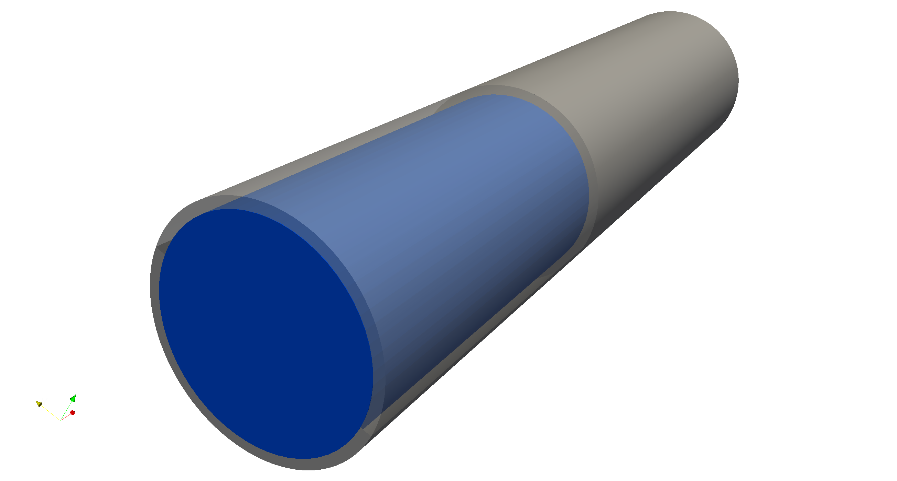

A Robin-Neumann Scheme with Quasi-Newton Acceleration for Partitioned Fluid-Structure Interaction is the most common partitioned algorithm for fluid-structure interaction (FSI) and high exibility concerning the solvers employed for the two subproblems. The Robin-neumann scheme generalizes the fiuid’s.boundary condition to a Robin condition by including the Cauchy stresses. This modification in fact successfully tackles both drawbacks of the. Dirichlet-Numann approach.
 Interface quasi-Newton (IQN) methods have been a vibrant research in recent years. They both stabilize and accelerate partitioned schemes. The Robin-Neumann (RN) scheme is of particular interest, as it uses Robin conditions to linearly combine the two contributions. It can be pictured as adding some numerical permeability to the FSI interface, allowing for artificial fluid fiuxes that vanish when convergence is reached. The capability of temporarily violating kinematic continuity not only counteracts the added-mass effect, but frees the Robin-Numann scheme from the incompressibility dilemma, as fully-enclosed
This work proposes a novel Robin-Neumann scheme with quasi-Newtonacceleration that merges strengths of both approaches. It provides a straightforward way of benefiting from IQN methods for FSI simulations with fully-enclosed incompressible fluids, for which the Dirichlet-Numann scheme is inapplicable. Its potential performance gain is investigated. Its performance is demonstrated in Section 5 via numerical test cases, covering both fully-fledgedenclosed and open fiuid-structure interaction problems.
The most widespread strongly-coupled algorithm for FSI problems is the Dirichlet-Neumann (DN) scheme. They employ a spline-based variant of the finite interpolation (FIE) method, see Hosters et al. and Make In this work, the mesh is adjusted to the mesh before the resulting interface deformation is set to the resulting mesh velocity. Figure 1 illustrates the procedure is illustrated in Figure 1.
The time step is considered converged if and only if the following two criteria are fulfilled: Both subproblem solutions have to stay virtuallyunchanged within one coupling iteration, i.e., their relative changes have to be lower than some bound εCoupling.(II) For accurate results, the residuals of the two nonlinear subproblems have to satisfy their own convergence criteria before going on to the next time step. The N1-CC strategy proposed in Spenkeet al. is running only one Newton iteration per solver call, unless convergence criterion (I) is already met.
Aitken’s dynamic relaxation can be interpreted as a simplified version of interface quasi-Newton (IQN) methods. A relaxation factor 0 < ω ≤ 1 is required to increase stability (“under-relaxation”) The relaxation factor often has to be chosen very small to ensure stability for all time steps, bringing along a drastic decrease in efficiency. The associated fixed-point-residual Rk = ˜xk − xk quantifies the change of x within coupling iteration k.
The interface quasi-Newton inverse least-squares (ILS) method is based on multi-dimensional finite differences, forming the required data pairs (∆˜x, ∆R) from the intermediatefields ˜xi and Ri of the k coupling iterations already performed for the current time step. The Frobenius norm minimization provides the unique solution, which is inserted into Equation (9) to obtain the quasi-newton update step.
The implicit multi-vector least squares (IMVLS) allows to evaluate this expression without any explicit Jacobian representation. The works by Lindner et al. or Delaiss´e et al. are recommended for an overview of different IQN methods. This results in the multivector.approximation n+1�J−1 = n�J+1 + apologeticprogiphygenicWk. The update step is the same as the update step of Equation (13) for αk.
Robin-Neumann scheme replaces Dirichlet condition of the flow problem with a Robin condition that forms a linear combination of kinematic and dynamic continuity. The key lies in weakening the Dirichlets condition, in principle allowing for a violation of the structure’s structural stress, but penalizing it with the factor αRN. The resulting coupling strategy is illustrated in Figure 2.5. For other cases, it is still a good approximation, but it is not a very good approximation.
The Robin-Neumann scheme as presented in Section 3.5 is extended by an IQN method. They propose the Robin-neumann quasi-Newton (RN-QN) scheme illustrated in Figure 3. Key features of the scheme are an update of the fluid loads and their direct feedback into the Robin condition. They transfer consistent nodal forces, which are computed from integrating the tractions over the FSI interface. The same force term can be identified in the �araption-element boundary integral integral (Fk−1)
The resulting updated tractions hk+1 = UIQN(˜hk) enter both the structural solver and the fluid’s Robin”boundary condition in the next iteration. The order of the two solver calls has been switched, as the collection of input-output data has been slightly profits from performing the quasi-Newton update in the end of a coupling iteration. The resulting updates are hk
The new procedure is outlined in Algorithm 1: Coupling iteration k starts with the structural solver computing the deformation dk = S(hk), which is combined with the tractions hk to form a Robin condition. With that, the flow solver determines new tractions ˜hk = F(dk, hk) After the quasi-Newton step hk+1 = UIQN, the updated tractions are passed back to the structure and stored for the next iteration’s Robin term.
Figure 4 visualizes balloon’s inand deflation by two snapshots and plot of the balloon radius over time. Table 2 compares multiple variants of the Robin-Neumann scheme for various choices of the parameter αRN. The simulated time span of tend = 5.0.0 is divided into nts = 500 steps of size. The convergence criterion takes both the coupling loop and the Newton steps of the problems into account. Figure 5 visualizes this in-and-defiation.
The new RN-QN scheme is preferable to the plain Robin-Neumann approach. Table 2 indicates how increasing the Robin parameter improves the solution quality, i.e., the conformity with kinematic continuity. In contrast, the results of the new Robin-neumann scheme with quasi-Newton acceleration show only a small. small.dependency on αRN. In fact, a very wide. parameter range yields a similar convergence rate that even outperforms the plain. Robin.Neumann scheme outperforms IQN with an optimal parameter.
The next test case considers the cylindrical pipe filled with an incompressible fluid depicted in Figure 6a. Due to a short excitation in the beginning, a deformation wave will propagate through the elastic channel wall. The elastic wall is characterized by the density ρs = 1000.0, the Young’s modulus Es = 3.0 · 105, and a Poisson ratio of νs = 0.3. This modification allows to switch between two scenarios by changing the boundary condition at the opposite end of the pipe.
An elastic tube case is studied for two separate versions, that differ in the boundary conditions. The simulation is run on a 90-section section of the cylindrical section only. The new RN-QN scheme outperforms the new Robin-Neumann approach for all choices. The accuracy of all Robin-neumann variants is decreasing for lower values of αRN, independently from the quasi-Newton update. An IQN method taking into account past time step data, like the IMVLS approach, is the most e�ective choice.
Illustration of the deformation wave running through the tube for both test case versions. Comparison of various Robin-Neumann schemes for the closed tube test case. Robin parameter shows an upper bound beyond which no stable results are obtained due to the incompressibility dilemma, as discussed in the next section. Figure 7 shows the upper part of the pipe is the actual pipe mesh, the lower half follows from symmetry and is only shown for a better visualization. Deformation wave propagates along the channel. Coloring is based on the fluid’s pressure field.
For general FSI problems without fully-enclosed fluids, however, the Dirichlet-Neumann scheme with interface-quasi-Newton acceleration is the prevalent partitioned algorithm. The new RN-QN scheme does not have any apparent upper bound for the Robin parameter in the tube with open outlet. The increased penalization of violating kinematic continuity essentially reintroduces the incompressibility dilemma. In this test case the RN-N scheme only exists in the pure-Dirichlet problems.
The DN-IQN f procedure satisfies kinematic continuity, but has a marginal offset in the interface tractions. The RN-QN coupling keeps up in terms of efficiency for almost the complete parameter range covered in the study. For good choices of αRN, it actually convergences signi ficantly faster. Setting αRN = 105 yields the biggest speed-up of roughly 50%.